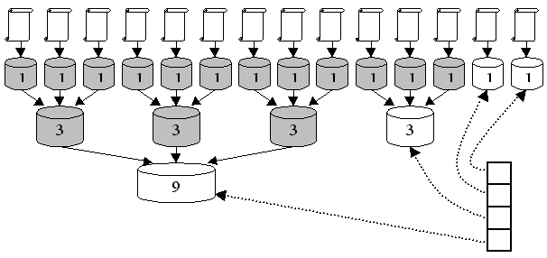

Introduction to Information Retrieval with Lucene
Artur Nowak

The slide deck is accessible at http://synaway.github.com/ir-lucene (source at http://github.com/synaway/ir-lucene)
The objectives
- Get a solid grasp of the basic information retrieval concepts
- Learn what to keep an eye on while implementing a search solution
- Get excited about what is possible with Lucene
- Be ready to explore IR world on your own!
Information retrieval
Information retrieval is the activity of obtaining information resources relevant to an information need from a collection of information resources—Wikipedia
Information need?

—Olivier Widder
What is a query then?
—Google Images
—netcarshow.com

—Ebay
Lucene is an IR library

—Lucene homepage
Lucene history
- Created by Doug Cutting in 1999
- First open source release in 2000 on SourceForge
- Apache Jakarta project from June 2002, top-level Apache project since February 2005
- Numerous ports and bindings exist: C#, C++, Python, Ruby, PHP, Delphi
- Wrapped in Apache Solr, ElasticSearch, Zoie, Compass, Hibernate Search...
- Spun off notable projects, including Nutch, Tika, Hadoop and Mahout
Document

—Google Images

—Google Images
Document is a basic, atomic unit of retrieval
- Documents are typically retrieved by id from the storage (e.g. database)
- All of the content of a document is ranked together
Documents have fields
(defined in the schema)

—Google Images
Precision and Recall
$$\textrm{Precision} := \frac{|Rel \cap Res|}{|Res|}$$
$$\textrm{Recall} := \frac{|Rel \cap Res|}{|Rel|}$$
Right balance depends on the application
- Gather all the studies on adverse effects of certain drug
- QA: who was the first president of the Republic of Poland?
- What are some highly popular sites using Lucene?
{kind=link}
From raw data to a document collection
- Character encoding translation
- Content extraction
- Language detection
- Tokenization
- Token normalization
Tokens & terms
Tokenizer – a function converting input text into a list of tokens
Token – product of running a tokenizer on the input text
Type – class of tokens
Term – representation of group of tokens (often, whole type) along with some info about the tokens (stored in postings list)
Tokenizer
In Lucene, it is represented with a subclass of org.apache.lucene.analysis.Tokenizer and returns TokenStream
Examples of tokenizers:
KeywordTokenizerWhitespaceTokenizerLetterTokenizerStandardTokenizer(handles cases like "don't", "I.B.M.", e-mail addresses...)
- Tokenization is applied to the query as well
- What about "New York" or "Jagiellonian University"?
- Compound nouns (Softwareentwicklungsprozess)?
- Eastern languages?
Three forms of token normalization
- Canonicalization (case-folding, "I.B.M", "I.B.M.", "IBM" -> "IBM")
- Double indexing (lorry ≈ truck, but "monster truck" ≠ "monster lorry")
- Query expansion
Example of query expansion
| Query term | Terms it gets expanded into |
|---|---|
| window | window, windows |
| windows | window, windows, Windows |
| Windows | Windows |
Important canonicalization use cases
- Romanization (naïve -> naive)
- Truecasing (U.S. -> us?)
- Handling of (e.g. telephone) numbers
- Handling of dates (may require complex solutions like HeidelTime)
- Stemming and lemmatization
Porter stemmer
—portery.pl
Porter stemmer in action
- dog, dogs, dog's, dogs' -> dog
- marine, marines, marina, marinas, marinate, marinated, ... -> marin
Stop words
- Zipf's law – the frequency of a word in a large-enough text corpus is inversely proportional to its rank in the frequency table
- Big decrease in index size
- To be or not to be?
- Stopping may be applied solely to queries
Token normalization in Lucene
In Lucene preprocessing pipepline, TokenStream produced by the tokenizer is then processed by a chain of TokenFilters. Many built-in filters exists and it is very easy to write custom filters. Filters are often grouped into Analyzers
Inverted index
—developer.apple.com
- Transfer time per byte is between 0.01 and 0.02 μs
- But the average seek time of the disk head is about 5 ms!
- Dictionary stored as a sorted list – allows fast wildcard queries
- We need second index to be kept in memory to minimize the number of disk seeks (.tii and .tis files)
- Inserts are extremely costly!
- Solution: use B-tree or hashtable at the time of index construction and then convert it to sorted dictionary representation
- Create a small index in memory as long as it fits (or
maxBufferedDocsparameter in Lucene is exceeded) - Merge it at the end – algorithm similar to merge sort
- What about the updates and removals?
- Do 'marking as removed' insted of real delete
- That decreses performance and skews the rating scores for documents!
- Why not delay merging phase to always have some "index in construction"?
- That leads to Lucene segments and
MergePolicy - Also performs "garbage collection"
Famous mergeFactor
—searchworkings.org
Ranked retrieval
Vector space model (SMART)
$$score(q, d) = \frac{\vec{V}_q \cdot \vec{V}_d}{|\vec{V}_q| \cdot |\vec{V}_d|}$$
TF-IDF
$$\textrm{idf}_t = \log \frac{N}{df_t}$$
$$\textrm{tf-idf}_{t,d} = \textrm{tf}_{t,d} \cdot \textrm{idf}_t$$
- Different variants of TF-IDF scheme
- Scope and Verbosity hypotheses
- OKAPI BM25F - current golden standard in academia
If you can not measure it, you cannot improve it
- Mean Average Precision, P@5, P@10
- Normalized Discounted Cumulative Gain: http://www.ebaytechblog.com/2010/11/10/measuring-search-relevance/
As I said, it’s important to be a gamer when you work in QA. It’s not so much about your gaming skill as it is the range of skills. A good QA team has to consist of different types of people. We have to have casuals and hardcores on board. If we have people that beat every game, get every achievement in it – then we have only one point of view. If you find a part of any game to be always absurdly difficult, be sure that it was tested only by hardcores.
Q & A
BTW, what subjects would you like to hear about? Chef anyone?